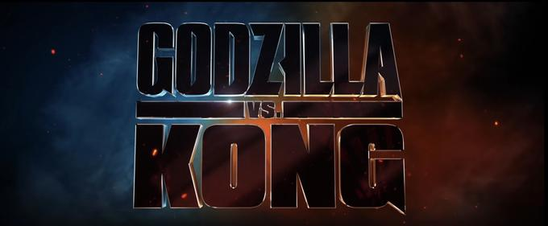

DIRECTOR: ADAM WINGARD

MAIN CAST:
Alexander Skarsgård as Dr. Nathan Lind - Scientist.
Millie Bobby Brown as Madison Russell - Daughter of Mark Russell.
Rebecca Hall as Dr. Ilene Andrews - researcher.
Brian Tyree Henry as Bernie Hayes - conspiracy theorist.
Shun Oguri as Ren Serizawa - son of Ishirō Serizawa.
Eiza González as Maia Simmons - top executive at Apex Cybernetics.
Julian Dennison as Josh Valentine - friend of Madison.
Kyle Chandler as Dr. Mark Russell - scientist.
Demián Bichir as Walter Simmons - CEO of Apex Cybernetics.
Kaylee Hottle as Jia - A young deaf girl who has a special connection with Kong.
SYNOPSIS OF THE MOVIE:
Kong and his protectors undertake a perilous journey to find his true home. Along for the ride is Jia, an orphaned girl who has a unique and powerful bond with the mighty beast.
However, they soon find themselves in the path of an enraged Godzilla as he cuts a swath of destruction across the globe. The initial confrontation between the two titans -- instigated
by unseen forces -- is only the beginning of the mystery that lies deep within the core of the planet.